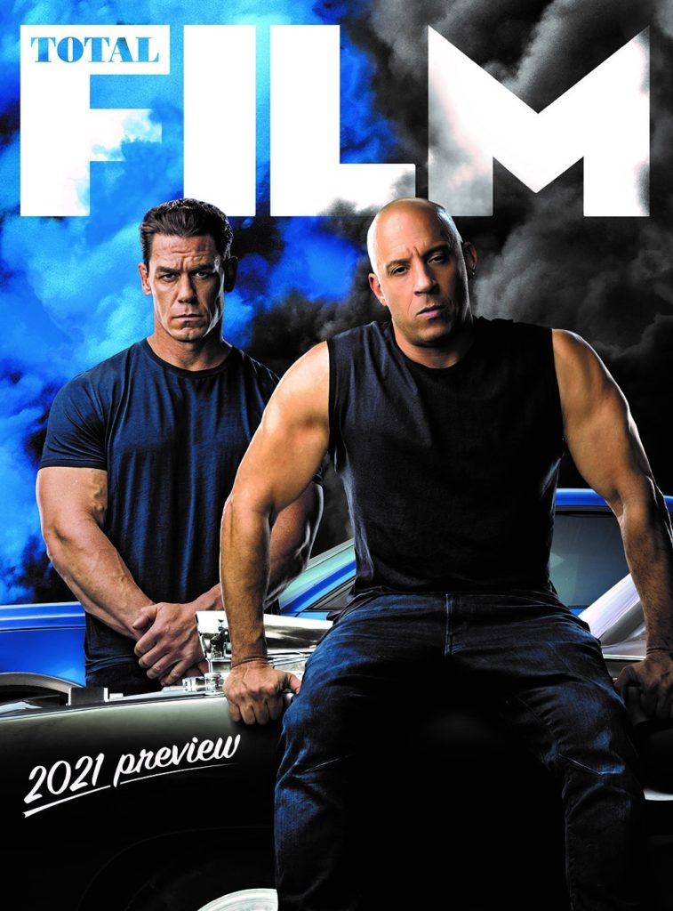

ตัวอย่างใหม่สุดว้าวของ Fast & Furious 9 จาก ซูเปอร์โบวล์ ซิ่งมาบอกว่า พฤษภาคมนี้ได้ดูชัวร์

หวังว่าการรอคอยของแฟน ๆ Fast & Furious 9 ที่รอภาคนี้มานานจะได้สิ้นสุดลงเสียทีในปีนี้ และตัวอย่างหนังฉบับ สปอร์ตซูเปอร์โบวล์ ประจำปีก็ได้ปล่อยออกมาแล้ว แม้ว่าหนังจะเผยให้เห็นรถซิ่งที่เปลี่ยนไปตรงที่สามารถขับสองล้อไปด้านข้างได้ แต่ความสัมพันธ์และความเป็นครอบครัวของพวกยังไงก็จะไม่เปลี่ยนแปลงอย่างที่ Dominic Toretto ตัวละครของ Vin Diesel บอกไว้ในตัวอย่างฉบับนี้
ตัวอย่างยังเผยโฉมแรกของนักแสดงออสการ์ Helen Mirren ที่กลับมารับบท Magdalene Shaw แม่ของตัวละคร Jason Statham และ Luke Evans มาตั้งแต่ภาค 6 พร้อมกับฉากใหม่น่าตื่นตาที่จัดเต็มแบบไม่ยั้งเท่าที่เวลา 30 วินาทีจะมีให้ได้ ชวนคิดเหมือนกันว่า สปอร์ตซูเปอร์โบวล์ปีที่แล้วหนังก็ใส่ฉากเร้าใจมาเยอะแล้ว ที่เหลือมาจนถึงปีนี้ (และน่าจะยังเม้มเก็บไว้ในหนังจริงอีก) จะมีฉากว้าว ๆ ให้แฟน ๆ ได้ชมมากแค่ไหน หนังภาค 9 นี้ เป็นการต้อนรับผู้กำกับ Justin Lin กลับสู่อ้อมอกของแฟรนไชส์อีกครั้ง รวมถึงการได้นางร้าย Charlize Theron ที่แว่วว่าจะกลายมาเป็นตัวดีกลับมาด้วย นอกจากนี้คนดูจะได้เห็นครอบครัวของ Toretto อยู่กันพร้อมหัน และหนังก็ยังได้นักมวยปล้ำที่มาเอาดีทางการแสดงอีกคนอย่าง John Cena ที่ก็เล่นหนังเยอะมากเข้าสู่แฟรนไชส์ กับบทบาท “น้องชายของ Dom” ที่จะมาเป็นคู่ปรับคนใหม่ แต่ตัวอย่างก็ชวนให้น่าคิดว่า จะเป็นตัวร้ายปลอม ๆ ที่ต้องไปตามดูตัวร้ายจริงในเรื่องกันอีกที